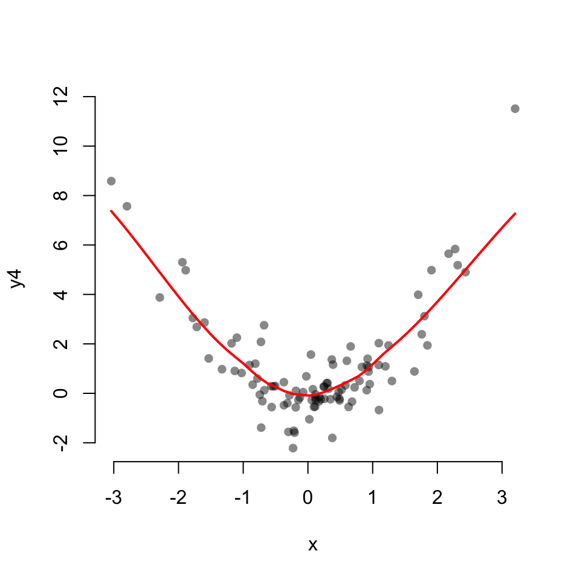
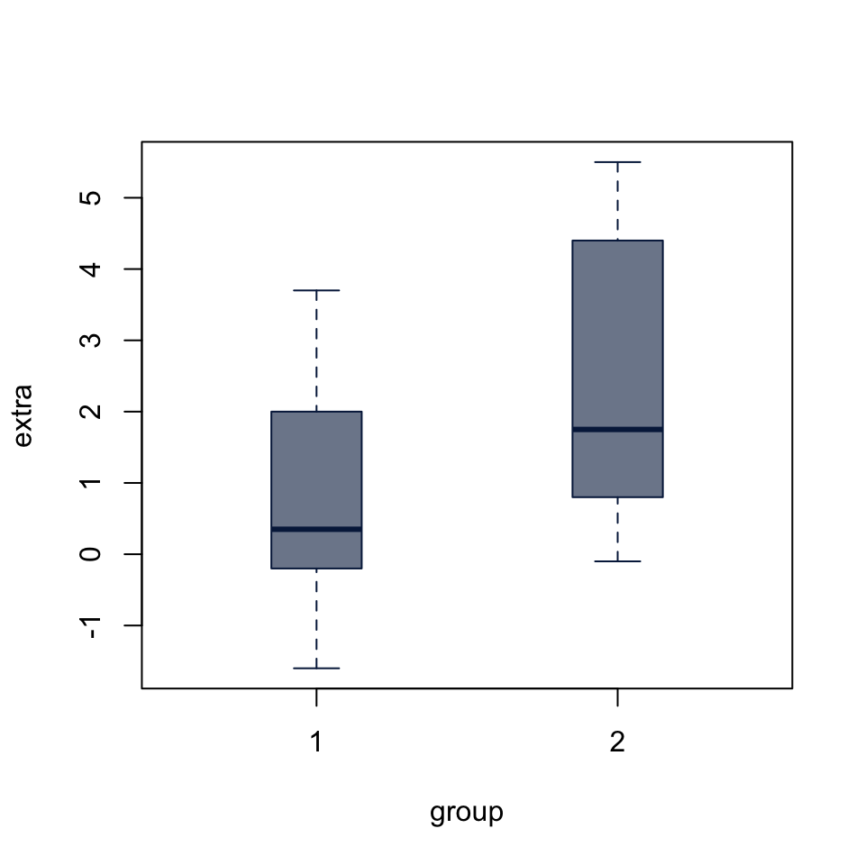
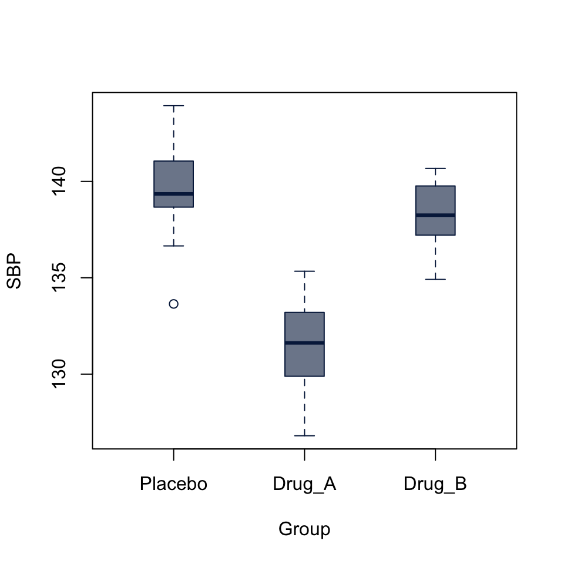
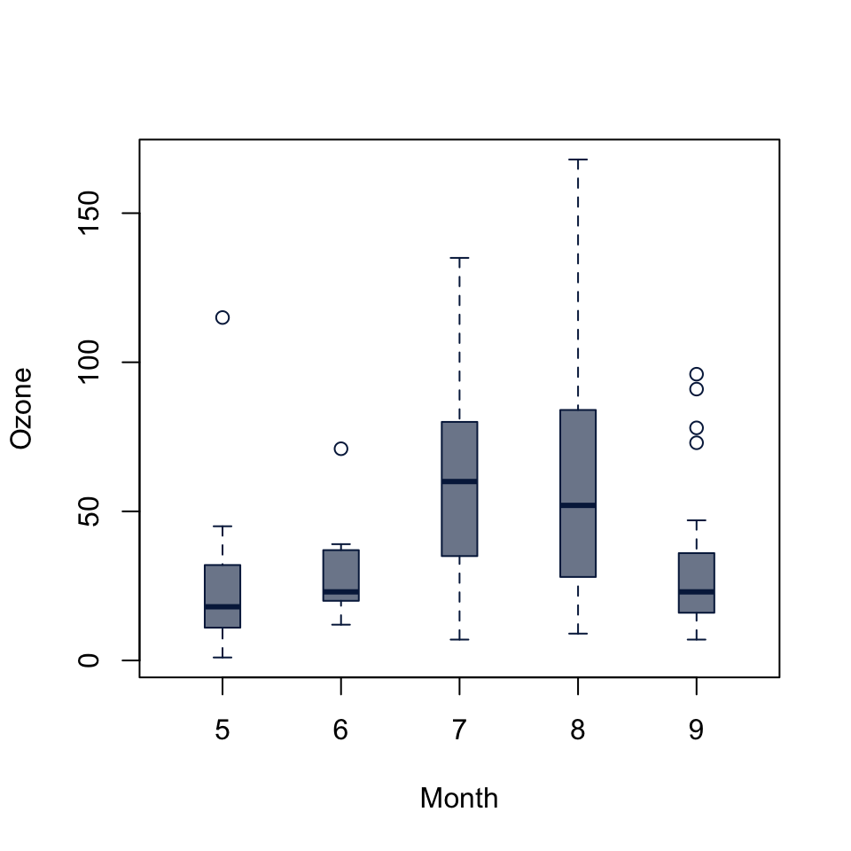
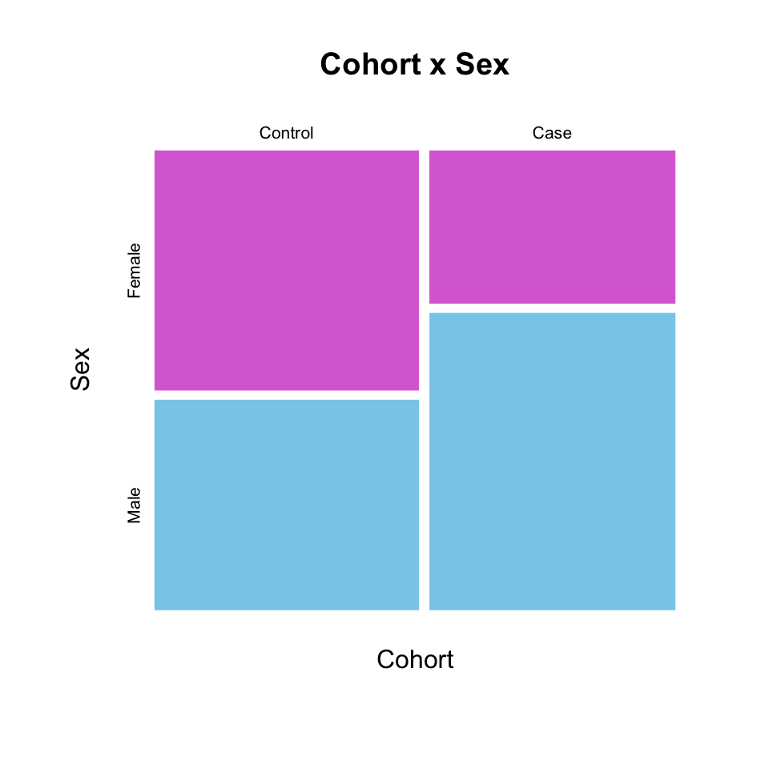
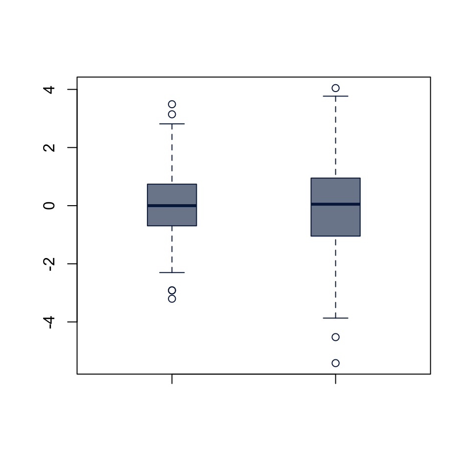
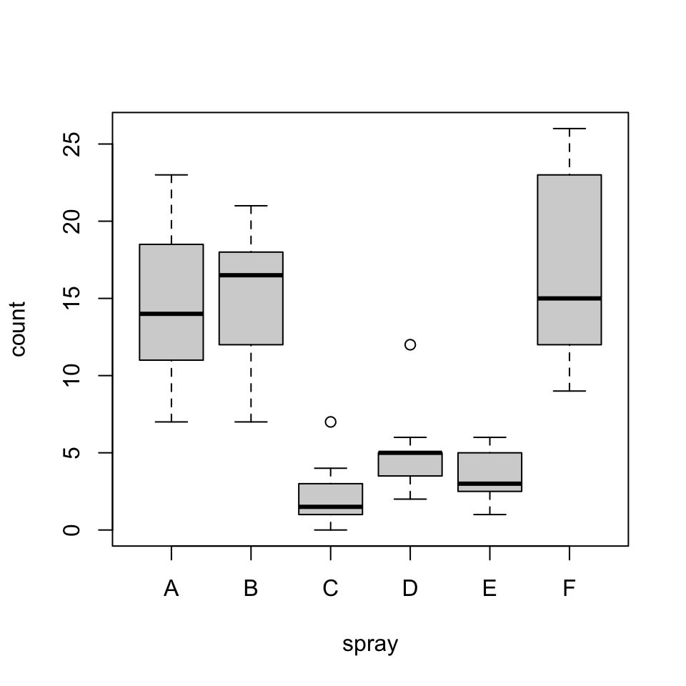

47 Common Statistical Tests
R includes a large number of functions to perform statistical hypothesis testing in the built-in stats package. This chapter includes a brief overview of the syntax for some common tests along with code to produce relevant plots of your data.
47.1 Correlation test
Scatterplot with linear fit:
Scatterplot with a LOESS fit
scatter.smooth(x, y4,
col = "#00000077",
pch = 16, bty = "none",
lpars = list(col = "red", lwd = 2))
cor.test(x, y1)
Pearson's product-moment correlation
data: x and y1
t = 0.66018, df = 98, p-value = 0.5107
alternative hypothesis: true correlation is not equal to 0
95 percent confidence interval:
-0.1315978 0.2595659
sample estimates:
cor
0.06654026 cor.test(x, y2)
Pearson's product-moment correlation
data: x and y2
t = 3.3854, df = 98, p-value = 0.001024
alternative hypothesis: true correlation is not equal to 0
95 percent confidence interval:
0.1357938 0.4889247
sample estimates:
cor
0.3235813 cor.test(x, y3)
Pearson's product-moment correlation
data: x and y3
t = 53.689, df = 98, p-value < 2.2e-16
alternative hypothesis: true correlation is not equal to 0
95 percent confidence interval:
0.9754180 0.9888352
sample estimates:
cor
0.9834225 cor.test(x, y4)
Pearson's product-moment correlation
data: x and y4
t = 0.66339, df = 98, p-value = 0.5086
alternative hypothesis: true correlation is not equal to 0
95 percent confidence interval:
-0.1312793 0.2598681
sample estimates:
cor
0.06686289 47.2 Student’s t-test
For all tests of differences in means, a boxplot is a good way to visualize. It accepts individual vectors, list or data.frame of vectors, or a formula to split a vector into groups by a factor.
47.2.1 One sample t-test
t.test(x0)
One Sample t-test
data: x0
t = 0.093509, df = 499, p-value = 0.9255
alternative hypothesis: true mean is not equal to 0
95 percent confidence interval:
-0.08596896 0.09456106
sample estimates:
mean of x
0.004296046 t.test(x1)
One Sample t-test
data: x1
t = 15.935, df = 499, p-value < 2.2e-16
alternative hypothesis: true mean is not equal to 0
95 percent confidence interval:
0.6322846 0.8101311
sample estimates:
mean of x
0.7212079 boxplot(extra ~ group, data = sleep,
col = "#05204999", border = "#052049",
boxwex = 0.3)
47.2.2 Two-sample T-test
Both t.test() and wilcox.test() (below) either accept input as two vectors, t.test(x, y) or a formula of the form t.test(x ~ group). The paired argument allows us to define a paired test. Since the sleep dataset includes measurements on the same cases in two conditions, we set paired = TRUE.
t.test(extra ~ group, data = sleep, paired = TRUE)
Paired t-test
data: extra by group
t = -4.0621, df = 9, p-value = 0.002833
alternative hypothesis: true mean difference is not equal to 0
95 percent confidence interval:
-2.4598858 -0.7001142
sample estimates:
mean difference
-1.58 47.3 Wilcoxon test
Data from R Documentation:
## Hollander & Wolfe (1973), 29f.
## Hamilton depression scale factor measurements in 9 patients with
## mixed anxiety and depression, taken at the first (x) and second
## (y) visit after initiation of a therapy (administration of a
## tranquilizer).
x <- c(1.83, 0.50, 1.62, 2.48, 1.68, 1.88, 1.55, 3.06, 1.30)
y <- c(0.878, 0.647, 0.598, 2.05, 1.06, 1.29, 1.06, 3.14, 1.29)
depression <- data.frame(first = x, second = y, change = y - x)47.3.1 One-sample Wilcoxon
wilcox.test(depression$change)
Wilcoxon signed rank exact test
data: depression$change
V = 5, p-value = 0.03906
alternative hypothesis: true location is not equal to 047.3.2 Two-sample Wilcoxon rank sum test (unpaired)
a.k.a Mann-Whitney U test a.k.a. Mann–Whitney–Wilcoxon (MWW) a.k.a. Wilcoxon–Mann–Whitney test
x1 <- rnorm(500, mean = 3, sd = 1.5)
x2 <- rnorm(500, mean = 5, sd = 2)
wilcox.test(x1, x2)
Wilcoxon rank sum test with continuity correction
data: x1 and x2
W = 47594, p-value < 2.2e-16
alternative hypothesis: true location shift is not equal to 047.3.3 Two-sample Wilcoxon signed-rank test (paired)
wilcox.test(x, y, paired = TRUE)
Wilcoxon signed rank exact test
data: x and y
V = 40, p-value = 0.03906
alternative hypothesis: true location shift is not equal to 0wilcox.test(x, y, paired = TRUE, alternative = "greater")
Wilcoxon signed rank exact test
data: x and y
V = 40, p-value = 0.01953
alternative hypothesis: true location shift is greater than 047.4 Analysis of Variance
boxplot(SBP ~ Group, data = BP_drug,
col = "#05204999", border = "#052049",
boxwex = 0.3)
SBP_aov <- aov(SBP ~ Group, data = BP_drug)
SBP_aovCall:
aov(formula = SBP ~ Group, data = BP_drug)
Terms:
Group Residuals
Sum of Squares 728.2841 264.4843
Deg. of Freedom 2 57
Residual standard error: 2.154084
Estimated effects may be unbalancedsummary(SBP_aov) Df Sum Sq Mean Sq F value Pr(>F)
Group 2 728.3 364.1 78.48 <2e-16 ***
Residuals 57 264.5 4.6
---
Signif. codes: 0 '***' 0.001 '**' 0.01 '*' 0.05 '.' 0.1 ' ' 1The analysis of variance p-value is highly significant, but doesn’t tell us which levels of the Group factor are significantly different from each other. The boxplot already gives us a pretty good idea, but we can follow up with a pairwise t-test
47.4.1 Pot-hoc pairwise t-tests
pairwise.t.test(BP_drug$SBP, BP_drug$Group,
p.adj = "holm")
Pairwise comparisons using t tests with pooled SD
data: BP_drug$SBP and BP_drug$Group
Placebo Drug_A
Drug_A 2.9e-16 -
Drug_B 0.065 1.7e-13
P value adjustment method: holm The pairwise tests suggest that the difference between Placebo and Drug_A and between Drug_a and Drug_b are highly significant, while difference between Placebo and Drub_B is not (p = 0.065).
47.5 Kruskal-Wallis test
Kruskal-Wallis rank sum test of the null that the location parameters of the distribution of x are the same in each group (sample). The alternative is that they differ in at least one. It is a generalization of the Wilcoxon test to multiple independent samples.
From the R Documentation:
## Hollander & Wolfe (1973), 116.
## Mucociliary efficiency from the rate of removal of dust in normal
## subjects, subjects with obstructive airway disease, and subjects
## with asbestosis.
x <- c(2.9, 3.0, 2.5, 2.6, 3.2) # normal subjects
y <- c(3.8, 2.7, 4.0, 2.4) # with obstructive airway disease
z <- c(2.8, 3.4, 3.7, 2.2, 2.0) # with asbestosis
kruskal.test(list(x, y, z))
Kruskal-Wallis rank sum test
data: list(x, y, z)
Kruskal-Wallis chi-squared = 0.77143, df = 2, p-value = 0.68boxplot(Ozone ~ Month, data = airquality,
col = "#05204999", border = "#052049",
boxwex = 0.3)
kruskal.test(Ozone ~ Month, data = airquality)
Kruskal-Wallis rank sum test
data: Ozone by Month
Kruskal-Wallis chi-squared = 29.267, df = 4, p-value = 6.901e-0647.6 Chi-squared Test
Pearson’s chi-squared test for count data
Some synthetic data:
set.seed(2021)
set.seed(2021)
Cohort <- factor(sample(c("Control", "Case"), size = 500, replace = TRUE),
levels = c("Control", "Case"))
Sex <- factor(
sapply(seq(Cohort), \(i) sample(c("Male", "Female"), size = 1,
prob = if (Cohort[i] == "Control") c(1, 1) else c(2, 1))))
dat <- data.frame(Cohort, Sex)
head(dat) Cohort Sex
1 Control Male
2 Case Male
3 Case Male
4 Case Female
5 Control Female
6 Case MaleYou can lot count data using a mosaic plot, with either a table or formula input:
mosaicplot(table(Cohort, Sex),
color = c("orchid", "skyblue"),
border = NA,
main = "Cohort x Sex")mosaicplot(Cohort ~ Sex, dat,
color = c("orchid", "skyblue"),
border = NA,
main = "Cohort x Sex")
chisq.test() accepts either two factors, or a table:
cohort_sex_chisq <- chisq.test(dat$Cohort, dat$Sex)
cohort_sex_chisq
Pearson's Chi-squared test with Yates' continuity correction
data: dat$Cohort and dat$Sex
X-squared = 18.015, df = 1, p-value = 2.192e-05cohort_sex_chisq <- chisq.test(table(dat$Cohort, dat$Sex))
cohort_sex_chisq
Pearson's Chi-squared test with Yates' continuity correction
data: table(dat$Cohort, dat$Sex)
X-squared = 18.015, df = 1, p-value = 2.192e-0547.7 Fisher’s exact test
Fisher’s exact test for count data
Working on the same data as above, fisher.test() also accepts either two factors or a table as input:
cohort_sex_fisher <- fisher.test(dat$Cohort, dat$Sex)
cohort_sex_fisher
Fisher's Exact Test for Count Data
data: dat$Cohort and dat$Sex
p-value = 1.512e-05
alternative hypothesis: true odds ratio is not equal to 1
95 percent confidence interval:
1.516528 3.227691
sample estimates:
odds ratio
2.207866 cohort_sex_fisher <- fisher.test(table(dat$Cohort, dat$Sex))
cohort_sex_fisher
Fisher's Exact Test for Count Data
data: table(dat$Cohort, dat$Sex)
p-value = 1.512e-05
alternative hypothesis: true odds ratio is not equal to 1
95 percent confidence interval:
1.516528 3.227691
sample estimates:
odds ratio
2.207866 47.8 F Test to compare two variances
F test to compare two variances
data: x1 and x2
F = 0.43354, num df = 499, denom df = 399, p-value < 2.2e-16
alternative hypothesis: true ratio of variances is not equal to 1
95 percent confidence interval:
0.3594600 0.5218539
sample estimates:
ratio of variances
0.4335363 boxplot(x1, x2,
col = "#05204999", border = "#052049",
boxwex = 0.3)
From R Documentation:
x <- rnorm(50, mean = 0, sd = 2)
y <- rnorm(30, mean = 1, sd = 1)
var.test(x, y) # Do x and y have the same variance?
F test to compare two variances
data: x and y
F = 5.4776, num df = 49, denom df = 29, p-value = 5.817e-06
alternative hypothesis: true ratio of variances is not equal to 1
95 percent confidence interval:
2.752059 10.305597
sample estimates:
ratio of variances
5.477573
F test to compare two variances
data: lm(x ~ 1) and lm(y ~ 1)
F = 5.4776, num df = 49, denom df = 29, p-value = 5.817e-06
alternative hypothesis: true ratio of variances is not equal to 1
95 percent confidence interval:
2.752059 10.305597
sample estimates:
ratio of variances
5.477573 47.9 Bartlett test of homogeneity of variances
Performs Bartlett’s test of the null that the variances in each of the groups (samples) are the same.
From the R Documentation:
plot(count ~ spray, data = InsectSprays)
bartlett.test(InsectSprays$count, InsectSprays$spray)
Bartlett test of homogeneity of variances
data: InsectSprays$count and InsectSprays$spray
Bartlett's K-squared = 25.96, df = 5, p-value = 9.085e-05bartlett.test(count ~ spray, data = InsectSprays)
Bartlett test of homogeneity of variances
data: count by spray
Bartlett's K-squared = 25.96, df = 5, p-value = 9.085e-0547.10 Fligner-Killeen test of homogeneity of variances
Performs a Fligner-Killeen (median) test of the null that the variances in each of the groups (samples) are the same.
boxplot(count ~ spray, data = InsectSprays)
# works the same if you do plot(count ~ spray, data = InsectSprays)
fligner.test(InsectSprays$count, InsectSprays$spray)
Fligner-Killeen test of homogeneity of variances
data: InsectSprays$count and InsectSprays$spray
Fligner-Killeen:med chi-squared = 14.483, df = 5, p-value = 0.01282fligner.test(count ~ spray, data = InsectSprays)
Fligner-Killeen test of homogeneity of variances
data: count by spray
Fligner-Killeen:med chi-squared = 14.483, df = 5, p-value = 0.0128247.11 Ansari-Bradley test
Performs the Ansari-Bradley two-sample test for a difference in scale parameters.
ramsay <- c(111, 107, 100, 99, 102, 106, 109, 108, 104, 99,
101, 96, 97, 102, 107, 113, 116, 113, 110, 98)
jung.parekh <- c(107, 108, 106, 98, 105, 103, 110, 105, 104,
100, 96, 108, 103, 104, 114, 114, 113, 108, 106, 99)
ansari.test(ramsay, jung.parekh)Warning in ansari.test.default(ramsay, jung.parekh): cannot compute exact
p-value with ties
Ansari-Bradley test
data: ramsay and jung.parekh
AB = 185.5, p-value = 0.1815
alternative hypothesis: true ratio of scales is not equal to 1x <- rnorm(40, sd = 1.5)
y <- rnorm(40, sd = 2.5)
ansari.test(x, y)
Ansari-Bradley test
data: x and y
AB = 963, p-value = 0.005644
alternative hypothesis: true ratio of scales is not equal to 147.12 Mood two-sample test of scale
mood.test(x, y)
Mood two-sample test of scale
data: x and y
Z = -2.7363, p-value = 0.006213
alternative hypothesis: two.sided47.13 Kolmogorov-Smirnoff test
Perform a one- or two-sample Kolmogorov-Smirnov test Null: x and y were drawn from the same continuous distribution.
47.14 Shapiro-Wilk test of normality
47.14.1 Q-Q Plot
47.15 Shapiro-Wilk test
shapiro.test(y1)
Shapiro-Wilk normality test
data: y1
W = 0.99952, p-value = 0.9218shapiro.test(y2)
Shapiro-Wilk normality test
data: y2
W = 0.72936, p-value < 2.2e-16